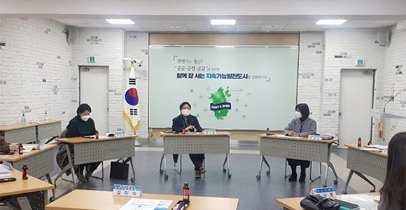

ESG 활동
NO.1 고객서비스 전문 기업 kt iskt is 환경경영 정책
-

- 임직원 환경경영 교육
- 전사 임직원을 대상으로 ESG 온라인 교육 및 친환경 카드뉴스를 배포하고 이러한 환경교육을 지속적으로 시행하여 기후변화 등 주요 환경 이슈에 대해 교육을 시행하고 있습니다. kt is는 전사 임직원이 참여하는 환경경영을 추진하고자 합니다.
-
- 임직원 친환경 프로젝트 동참
- 다음 세대가 건강한 숲을 만날 수 있도록 kt is 임직원이 친환경 프로젝트에 참여합니다 1단계: 생활 속 에너지 절약 캠페인 2단계: 렌탈 제품 환경 친화적 전환 3단계: 건물 에너지/용수/폐기물 절감안 마련
기업지배구조헌장
kt is (이하“회사”라 한다.)는 고객의 요구사항 해결을 넘어 숨어있는 니즈까지 선제적으로 발굴하고 해결하여 새로운 가치를 지속 제시함으로써 고객에게 어제보다 더 나은 삶을 제공하는 기업이 되고자 한다.
kt is 기업지배구조헌장은 주주의 가치제고, 주주총회 및 독립된 이사회와 전문 경영인 간의 견제와 균형의 조화, 회사의 투명한 경영이 정착될 수 있는 전문 감사기구의 독립적 운영 등, 회사 경영의 근간이 되는 건전한 지배 구조의 나아 갈 방향을 선언하고 실행한다.